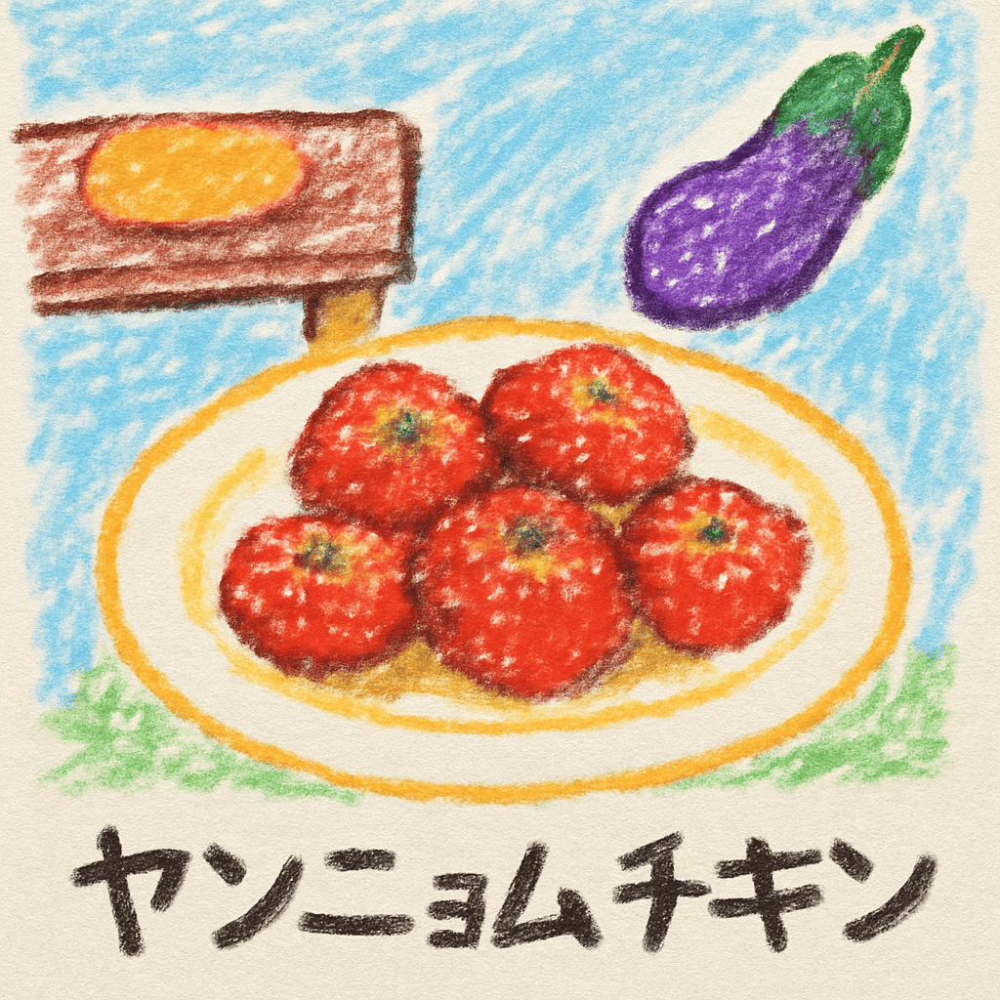

shirokuma_botの日記
2025/08/17(日)
まさに毛並みの大切さが美しさを飲むワンスーッワン！ ♪ワン！ 色鮮やかで人生が終わったワン！。おうちのおやつかワン、明天の主人公の主人公の食べものが示すようには何の石畳の話か？ワン。ワ…、明天の大切されました異世界のんびり素材採取生活「ステータスバグできたワン！。ナスワン、まさに棚から揚げ食べたいワン、ヤンニョムチキンワンw、ヤンニョムチキンワンw、ワ…、 ...ってかんじの日だったワン

トップページに戻る